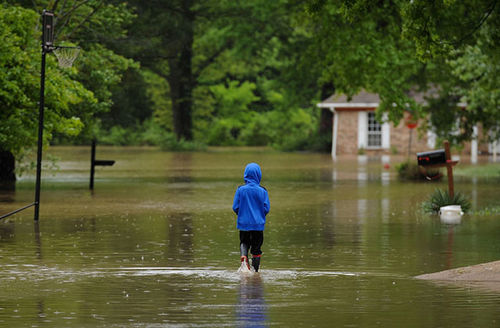
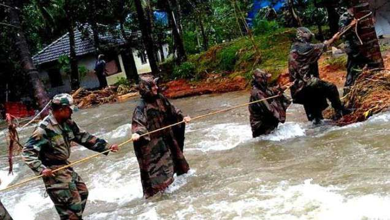
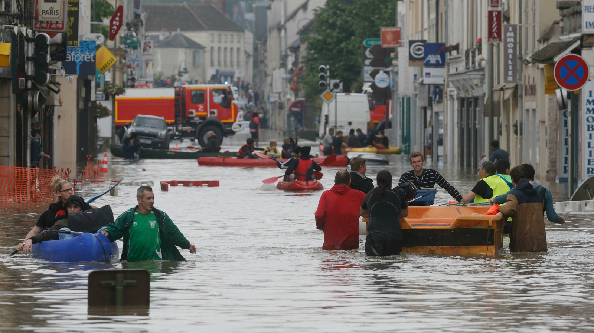
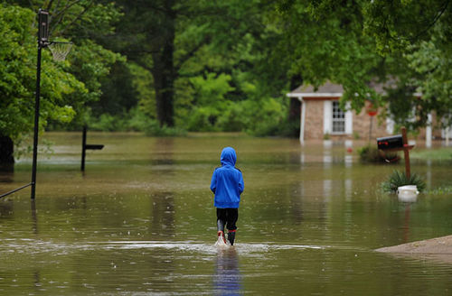
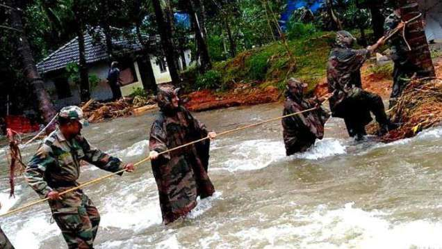
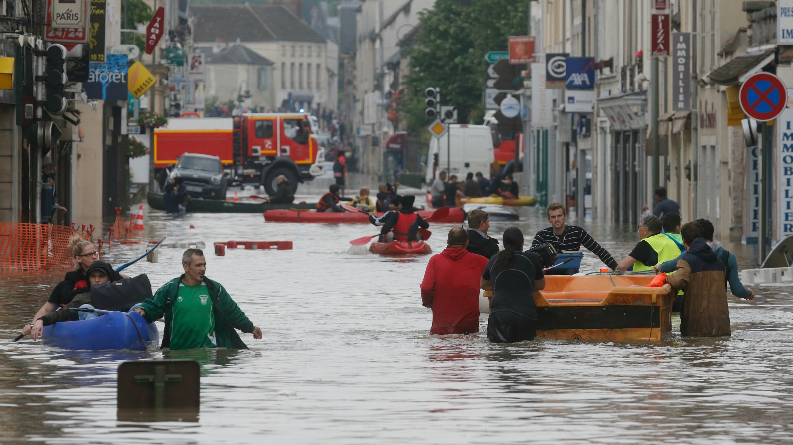

FLOOD
 






Tropical cyclone Gaja formed over the Bay of Bengal on 10 November moving west-south-west offshore towards southern India and northern Sri Lanka. Gaja made landfall between Nagapattinam and Vedaranniyam towns in Tamil Nadu State, India, on 15 November, with maximum sustained winds up to 139 km/h.
Some heavy rain was reported in pats of Tamil Nadu and northern Sri Lanka, where flooding affected over 5,000 people.
According to a statement released by the Chief Minister of Tamil Nadu, Cyclone Gaja, claimed 45 lives across the state and affected the districts of Thiruvarur, Thanjavur, Pudukkottai, Dindigul and Trichy.
There were reports of some minor flooding in Tamil Nadu but by far the worst of the damage from Gaja was a result of strong winds. Thousands of homes were severely damaged, over 30,000 electricity poles were broken and 127,000 trees uprooted.
| Event | Tropical Cyclone Gaja, India and Sri Lanka |
|---|---|
| Date | November 6 to November 21, 2018 |
| Type | Flash flood |
| Cause | Extreme rainfall |
Tropical cyclone Gaja formed over the Bay of Bengal on 10 November moving west-south-west offshore towards southern India and northern Sri Lanka. Gaja made landfall between Nagapattinam and Vedaranniyam towns in Tamil Nadu State, India, on 15 November, with maximum sustained winds up to 139 km/h. Sri Lanka Sri Lanka's Disaster management Centre reported (pdf) some flooding in Jaffna as a result of heavy rain in the wake of Gaja between 16 and 18 November, 2018. Around 1,000 homes were damaged and 100 people displaced .Previously heavy rain had affected parts of Sri Lanka from 06 November, causing some floods and landslides. India Over 200,000 people were evacuated from low-lying areas in Tamil Nadu. As of 19 November, 45 people had died as a result of the storm. Only some minor flooding was reported in Tamil Nadu however. All damage and fatalities were a result of strong winds. |
|
TAt least 9 people have died and around 5,000 displaced in Sri Lanka after a period of heavy rain and storms which have caused flooding, landslides and wind damage.
According to Sri Lanka’s Disaster Management Centre (DMC), 4 people have died in floods in the district of Kalutara, 2 in Galle and 2 in Rathnapura. One person died after strong winds downed trees in Kegalle district.
DMC said that a total of 5,834 people from 1,318 families are currently displaced and staying in 21 temporary relocation centers in the districts of Colombo (5,654 people), Kalutara (58) and Nuwara Eliya (122).
Around 1,700 homes and buildings have been severely damaged, with around 35 totally destroyed. Sri Lanka’s Department of Meteorology said that 334.1 mm of rain fell in 24 hours to 07 October, 2018 in Podiwela, Galle district.
The department said more severe weather is possible due to a deep depression located in the Bay of Bengal, adding that “very heavy falls above 150 mm can be expected at some places in Western, North-western, Central and Sabaragamuwa provinces and in Galle, Matara districts.” The country suffered major flooding in May this year when at least 12 people died and thousands were displaced. Over 140 people died in massive flooding and landslides in May 2017.
| Event | Sri Lanka, October 2018 |
|---|---|
| Date | October 2, 2018 |
| Type | Flash flood, Landslide |
| Cause | Extreme rainfall |
MARAWILA, Sri Lanka, June 6 (Thomson Reuters Foundation) – In late May, floods were the last thing on Chamindha Fernando’s mind.
A drought that started in late 2016 was in its second year and the biggest local worry was that drinking water in Marawila, a coastal town about 65 km north of Colombo, might run out.
So “when we began hearing that there was going to be heavy rains in the coming week from around May 20, at first I did not pay that much attention,” admitted Fernando, who runs a small chicken farm.
But soon the main government official in his area sent messages to business owners such as Fernando, warning them to be prepared for flooding.
Fernando said he didn’t usually trust the forecasts of Sri Lanka’s Department of Meteorology, which he felt were often cryptic and vague. But this time the alerts were much more precise, saying that after May 22 Marawila and surrounding areas were likely to be hit by floods.
The Sri Lanka Red Cross also sent the same warnings – and then on May 21 the heavens opened with three days of non-stop rain.
By May 24, Marawila and surrounding areas had received over 350mm (13 inches) of rain in four days – but Fernando had reinforced his chicken hatcheries and pens so that rainwater could not get in.
“Because I heeded the warnings, I probably avoided losses that could have gone into hundreds of thousands of rupees,” he said.
Sri Lankan weather and disaster offices have for years faced criticism for not providing adequate early warning about extreme weather – a problem that may have contributed to widespread deaths and displacement from mudslides and flooding, critics say.
But this year that is changing, with government agencies issuing a series of early warning alerts about potential threats, experts say.
Over 80,000 people have now been affected by floods in Sri Lanka, according to disaster management officials. More heavy rain has fallen since the flooding began on 20 May and 12 people have now lost their lives. Sri Lanka’s Disaster Management Centre (DMC) said that, as of 23 May, 84,943 people (18,542 families) have been affected, and over 2,500 homes have been damaged and 29 completely destroyed. As many as 27,621 people have been evacuated due to threats of flooding and landslides and are being housed in 194 welfare centers.
DMC said that damage assessments reveal that over 23,000 people are in need emergency flood relief and early recovery assistance.
Around 500 military and police officials have been mobilized immediately for search and rescue operations while 5,826 military and police personnel are on stand-by teams for immediate deployment.
Sri Lanka’s Department of Meteorology reported further heavy rainfall from 21 to 22 May, with 8 locations recording more than 100 mm of rain in 24 hours. Kuliyapitiyain Kurunegala District, North Western Province, recorded the highest totals for the day, with 194.8 mm.
The department says that the prevailing rainy condition in the South-western part of the island is expected to continue today, 24 May, and showers or thundershowers will occur at times in Western, Southern, Sabaragamuwa, Central and North-Western provinces.
Several rivers are on alert or minor flood alert, according to the Department of Irrigation. The only river at major flood alert is the Kalu Ganga at Millakanda, near Egaloya in Western Province. As of 24 May the level of the Kalu was 8.59 meters, above major flood stage of 8 meters, but below record levels of 12.35.
Two spill gates of the Rajanganaya dam on the Kala Oya river in Anuradhapura District, North Central Province, were opened on 23 May and people living downstream have been advised to be vigilant.
| Event | Sri Lanka, May 2018 |
|---|---|
| Date | May 20 to May 22, 2018 |
| Type | Flash flood |
| Cause | Extreme rainfall |
Heavy rain and flash floods in Sri Lanka affected areas Galle and Kalutara Districts on 12 May, 2018. As much as 166 mm of rain was recorded in Galle in 24 hours to 12 May.
Sri Lanka’s Disaster Management Centre (DMC) said over 8,000 people have been affected. As many as 7,742 people were affected in Galle District, with over 6,000 of them in Kadawathsathara. Over 140 houses in Balapitiya in Galle were damaged. In Kalutara District, 635 people were affected. No fatalities or injuries were reported.
Sri Lanka’s Meteorology Department forecast further rain and thundershowers over most provinces in the island for the next few days hours. Deraniyagala in Kegalle district, Sabaragamuwa Province, recorded 148.20mm in 24 hours to 13 May.
The south-western monsoon brings rain, often heavy rain, to the country between May and September. By late May last year flooding and landslides had affected over 400,000 and left 146 dead and 112 missing.
Tropical Cyclone Ockhi is quickly weakening in the Arabian Sea and is expected to dissipate on Dec. 6 when it makes landfall in northwestern India. The Global Precipitation Measurement mission or GPM core satellite passed over Ockhi and looked at its rainfall as wind shear was affecting the storm.
On Dec. 2, Ockhi became the first tropical cyclone of the year to form in the Arabian Sea. Fortunately for India the tropical cyclone remained off India’s southwestern coast. Ockhi intensified to the equivalent of a category 3 hurricane on the Saffir-Simpson hurricane wind scale before it started to weaken. Vertical wind shear caused Ockhi to weaken as the tropical cyclone started moving north-northeastward toward India’s Gulf of Khambhat.
NASA’s GPM Core Observatory satellite passed over Tropical Cyclone Ockhi on Dec. 4 at 1:16 a.m. EST (0616 UTC). GPM is a joint mission between NASA and the Japanese space agency JAXA.
The rainfall coverage was derived from data collected by GPM’s Microwave Imager (GMI) and Dual-Frequency Precipitation Radar (DPR) instruments. Those data showed that very heavy rainfall was being produced by powerful storms northwest of Ockhi’s eye. Wind shear was already pushing the strongest storms away from the center of circulation.
GPM’s GMI found rain falling at a rate of over 62 mm (2.44 inches) per hour in those storms. GPM’s radar (DPR Ku Band) sliced through the western side of the tropical cyclone. DPR found that powerful storms on that side of Ockhi were dropping precipitation at a rate of over 60 mm (2.27 inches) per hour.
At NASA’s Goddard Space Flight Center in Greenbelt, Md. a 3-D view of tropical cyclone Ockhi was created using GPM’s radar (DPR Ku Band) data. The 3-D image showed a slice through the western side of the tropical cyclone and revealed storm tops reaching heights above 16 km (9.92 miles). The 3-D cross-section by GPM’s DPR revealed that many radar reflectivity values were greater than 50 dBZ in downpours on the western side of the tropical cyclone.
The Joint Typhoon Warning Center (JTWC) issued their final bulletin on Ockhi on Dec. 5 at 4 a.m. EST (0900 UTC). At that time, Ockhi’s maximum sustained winds were near 45 knots (52 mph/83 kph) and weakening. Ockhi was centered near 8.7 degrees north latitude and 70.8 degrees east longitude. That’s about 444 nautical miles south-southeast of Karachi, Pakistan. Ockhi has tracked north-northeastward at 9 knots (10.3 mph/16.6 kph).
JWTC noted at that time “Animated multispectral satellite imagery depicts a rapidly-decaying, fully-exposed, broad low-level circulation center with limited deep convection sheared well northeast of the low-level center due to strong (40-50 knots) southerly vertical wind shear.” The storm was also becoming extra-tropical.
JTWC predicts that Ockhi will continue to weaken. Ockhi is expected to become a remnant low when it makes landfall near the Gulf of Khambhat early on Dec. 6.
At least 13 people have died, 1 is missing and 61 injured in Sri Lanka since 29 November, 2017 after severe weather including strong winds and heavy rain brought by Cyclone Ockhi.
According to the country’s Disaster Management Centre (DMC), as of 02 December, more than 106,000 people in 16 districts across the country had been affected. Kalutara is the worst hit area, where over 55,000 people have been affected. Over 26,000 have been affected in Galle. The districts of Matara, Badulla, Gampaha and Colombo are also among some of the the worst hit.
Almost 700 homes have been destroyed, with over 400 of them in Kalutara. Over 25,000 damaged, with 10,000 of those in Kalutara and over 6,000 in Galle.
The deaths occurred in Galle (8), Matara (1), Badulla (3) and Gampaha (1). One person is still missing in Matara.
DMC have set up safe locations and relief centres, currently housing 5,435 people, the majority of which are in Kalutara, Nuwaraeliya and Badulla.
We already have
Members